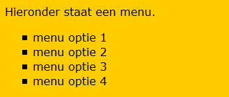
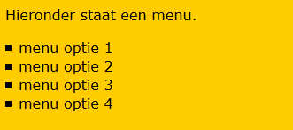
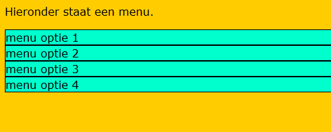
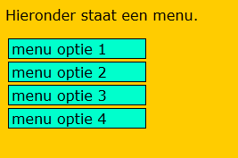
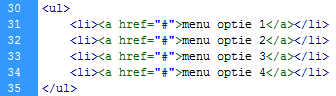
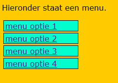
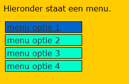
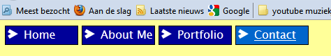

Geavanceerde opmaak
We hebben eerder geleerd dat je met de <ul> en <li> een ongeordende lijst kan maken. Deze lijst ziet er standaard niet heel mooi uit. Met deze lijst kun je ook heel gemakkelijk een menu structuur creëren. Hieronder wat voorbeelden.
| CSS Code | Werking |
| list-style-type | Hier kan je het standaard rondje veranderen in een vierkant(=square), allerlei cijfers/letters of zelfs geen symbool. |
| list-style-image | Hiermee kan je het symbool in een door jezelf gemaakt plaatje veranderen. |
| list-style-position | De symbolen komen ter hoogte van de tekst te staan of ervoor. Doordat er een standaard padding is, zie je hier niet veel van. |
| list-style | Alle bovenstaande kan je hierbij instellen. |
Omdat je bij een ongeordende lijst te maken hebt met een <ul> en <li> moet je goed opletten aan welk element je de CSS koppelt. Bovenstaande geldt voor de <ul>.
| Opdracht 1: Namaken | |
|
Maak de afbeelding hier rechts, na.
Sla het bestand op als Opdracht14-1.html. |
 |
Je ziet dat de tekst is ingesprongen. Dit doet de <ul> automatisch. Dit kun je uiteraard ook manipuleren. Door middel van padding bepaal je de afstand binnen het element. Standaard staat het op 40px.
| Opdracht 2: Namaken | |
|
Open bestand Opdracht14-1.html.
Sla het bestand op. |
 |
Het lijkt nu nog niet een echt menu. Hiervoor moeten we wat instellingen aanpassen bij de <li>. Hier kun je namelijk de achtergrond kleur aanpassen en een rand toevoegen.
| Opdracht 3: Menu | |
|
Open bestand Opdracht14-1.html.
Sla het bestand op. |
 |
Je ziet dat er van je originele lijst niet heel veel overblijft qua opmaak. Het begint zelfs op een tabel te lijken. Waarom zou je niet een tabel gebruiken dan? In dit geval had het gekund maar normaal kan het wel voorkomen dat je een symbool voor je menu-items wilt. Dan is een <ul> met <li> het makkelijkste.
Je menu staat nu nog over de hele pagina. Dat willen we niet. We kunnen namelijk ook weer een breedte opgeven. Dit gebeurd met dezelfde code als waarmee je een plaatje een breedte geeft. Ook kunnen we de menu-items iets van elkaar af laten staan. Dit kan je met de margin doen.
| Opdracht 4: Namaken | |
|
Open bestand Opdracht14-1.html.
Sla het bestand op. |
 |
Een menu is er voor zodat je naar verschillende pagina’s op je website kan gaan. Omdat voor elkaar te krijgen moet je een verwijzing maken. Een zo gehete hyperlink. Let er bij de <li> wel op dat je de tekst binnen de <li> linkt!
In hoofdstuk 5 hebben we een verwijzing gemaakt naar andere opdrachten. Als je niet meer weet hoe dit exact werkt, kun je daar nog eens naar kijken. Hieronder staat een voorbeeld van een verwijzing.
Je ziet dat bij de href een hash-tag (hekje) is ingevuld. Dit kun je doen om je link toch te laten werken zolang je nog niet weet wat het uiteindelijke doelbestand is. Je maakt nu een link naar zichzelf eigenlijk.
| let op: |
| Het <a> element moet altijd binnen het <li> element staan. |
| Opdracht 5: Namaken | |
|
Open bestand Opdracht14-1.html.
Sla het bestand op. |
 |
Net zoals de <li> heeft ook de <a> een standaard opmaak. Je ziet dat er een streep onder de letters verschijnt en dat de tekst blauw wordt. Dit is de standaard opmaak van een verwijzing. Er zijn verschillende statussen waar een link zich in kan bevinden. Hieronder een overzicht.
| CSS Code | Werking |
| a:link | Een normale, (nog) niet bezochte link. |
| a:visited | Een link die de bezoeker heeft aangeklikt. |
| a:hover | Zodra de gebruiker over de link heen gaat met de muiscursor. |
| a:active | Het moment dat de gebruiker op de link klikt maar de muisknop nog niet heeft losgelaten. |
| a | Hiermee overrule je alle statussen. |
Deze statussen voeg je dus allemaal toe aan je CSS. Daarbinnen kun je dus de standaard opmaak wijzigen. Als je dus te allen tijde een witte tekst wilt hebben voeg je bij de status a een color:#FFF; in. Wil je dit alleen bij een bezochte link, dan doe je dit bij a:visited. Deze statussen kun je ook toevoegen aan bijvoorbeeld de li.
| Opdracht 6: Namaken | |
|
Open bestand Opdracht14-1.html.
Sla het bestand op. |
 |
We zijn nu steeds bezig geweest met een menu dat onder elkaar stond. We kunnen de <li> ook naast elkaar op het scherm plaatsen. Dit kun je in de CSS doen. Je moet dan bij de li een float:left; toevoegen.
| Opdracht 7: Namaken |
|
Open een nieuw html bestand.
Sla het bestand op als Opdracht14-7.html. |
|  |